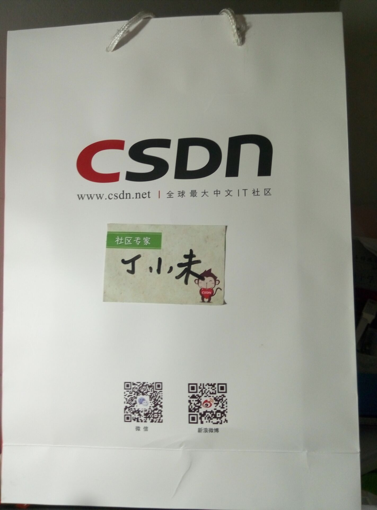
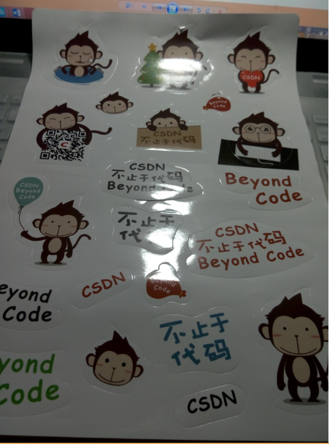
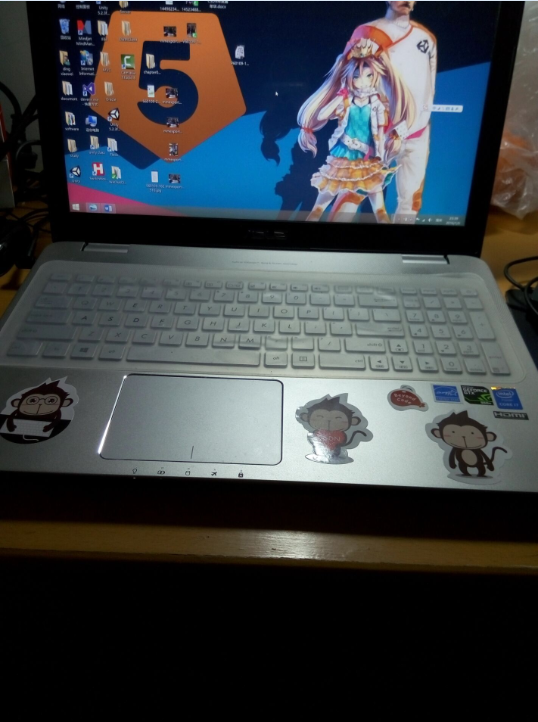
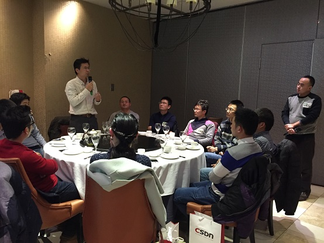

CSDN官方北上广三地同时举行的活动小结：http://geek.csdn.net/news/detail/50482，下面是本人参加上海站的小结。
今天很荣幸参加CSDN技术大牛上海聚会，首先申明一点我只是一个不起眼的小程序员，首先就是要感谢CSDN给我这么一个机会认识了一些老一辈的技术大牛老师，包括百姓网联合创始人潘老师，爱奇艺、携程、饿了吗、中兴、华为、点评、完美、乐元素、因特尔、百度等等技术经理，涉及到java、.net、C++、unity、php、云计算、大数据等等各行各业的技术专家，能做为一名为数不多的90后程序员晚辈参加这次盛宴，感觉是给我的新年的最好的一个礼物。感谢CSDN的钱总的邀请和准备使得每个人在这次的”腐败”活动中吃喝玩乐的都特别开心。

虽然一开始刚到人民广场出站口，不从到怎么走，因为没给出具体的地址，只能在群里吼一声，然后DBA黄彬黄总拎着一个CSDN包从四楼下来到马路边接我，感谢黄总指路。当时第一感觉就是，这些技术大牛都非常的平易近人，很随和。然后到了四楼进行现场签到和领取礼品。

貌似里面有一张CSDN的贴画，

回来后我就把贴画贴在我的新电脑上，虽然知道以后撕开或许会留下印记，但还是这么做了，就是想纪念这次非常值得纪念的活动。

进入会场之后，我找了个空桌子做了下来，然后一个大牛很和气的过来做到我的旁边跟我交流，后来我才知道也是一位工作了十多年的老程序，目前在英特尔从事spark大数据方面的工作也是这方面的技术经理，更是这方面的专家，吃完晚饭我跟这位程浩程总一起从人民广场一路聊到我住的地方九亭，一路上一个多小时的车程，我们聊得很欢，他谈到他是04年大学毕业，我是14年毕业的，我们之间本应该会有代沟，但却没有，交流的很愉快，感觉一个多小时的车程很短意犹未尽我就到九亭地铁站了，这中间谈到游戏，谈到创业，谈到他那个时代的程序岗位，本应该是前辈对晚辈的一些指点，但却谈的像朋友一样进行心灵的对话，我感觉程总很随和，非常的平易近人，聊天的过程中他主要要求加我的联系方式，我深深的感觉技术大牛的魅力不仅仅在他的技术层面上，更是他的性格上，很温和，让人没有距离感，我完成看不出他像一个三十多岁成家立业的人。回到之前我到了四楼坐在餐桌上，然后想起来另外一个unity图形学方向颇有研究的一个牛人，是一个比我小一岁的现场另外一个90后程序，但却是现场唯一一个女程序，我学刚刚黄彬黄总那样接我的方式去接她上来，她虽然年龄不大，但在游戏圈里还是颇有名气，不少人都知道她，因为她在CSDN上出了一系列关于图形学的教程，大家看了都非常的收益，她就是冯乐乐同学，网名叫妈妈告诉我女孩子要学会坚强，是一名交大的在读研究生。总共有四桌人，45个人左右，然后分在四桌，她也很荣幸和我们再一桌，也理所当然的被任命为桌长。后面进入到每个桌子的自我介绍环节，首先是乐乐同学率先介绍，只是做了一个简单的自我介绍，然后我补充了一些她的研究方向，因为就我们两是90后，又都是游戏圈的，之前就有过一些技术交流。然后轮到我介绍我也是简单的介绍了一下是一名手游客户端程序，然后接下去我旁边的程总，目前是英特尔的技术经理，后面是大众点评的技术经理，然后是携程的技术经理许鹏，他们都是研究spark大数据方向，他写过Spart源码解析这本书，我同学学习spark就是看的他的书籍，然后后面也一名unity手游程序，介绍自己说是之前在腾讯工作，后来自己出来创业，也是一个技术非常不错的小伙张乾张总。再接下去是百姓网联合创始人潘晓良潘总，主持人也是浓墨重彩的介绍了一下潘老师，

左边是潘老师，右边是CSDN的钱总，专门负责此次的活动，也感谢钱总的工作，为此次活动的精心准备。
最后在餐桌上给我们分享一些自己的新的感悟和经验，他说程序员的黄金时期就是25-30，要抓住这段时间勇敢闯闯，自己创业什么的，这段时间是程序员最具有活力和朝气的时间，讲到这里我旁边的英特尔的程总就拍拍我的肩说，我们已经过了这段时间了，小伙好好干，你还有很多机会。然后其他人都各自做了自我介绍，第二个环节是每个桌子上的人开始轮流给所有人介绍身边下一位人，介绍给在场的所有人，在轮到最后一个人介绍我身边的乐乐同学的时候，主持人和在场的所有人都开始起哄了，因为乐乐是在场的唯一一位技术程序媛，难免会引起其他人的关注。下面就是一些游戏环节，我参加了抢椅子，主动第一轮就成功推出，没有跟乐乐同学抢，也被大家认为成功的当了一次护花使者，然后是抢红包得kinddle的环节，45个红包我抢了8.2第二名，最佳手气的8.5成功获得了kinddle的奖品。最后一个游戏是搜集物品的游戏，我们桌的代表是我身边的程总，第一个搜集的物品是一毛钱的纸币，本以为没人会带着玩意的，没想到还真有个哥们带了几张，然后台上的四位选手都成功的搜集到了第一个物品，然后是搜集一根白头发，程总就叫我帮他从他头上拔了一根，由于容易弄丢，我就暂时好好保管着，最后检查物品的时候，我都把他的白头发握在手心都握出一把汗出来了。接下来下面是每个桌子自己想一个特有的物品，为了难道其他桌的选手，第一桌是一张一百元的地铁卡发票，我们这桌的代表选手程总得到乐乐同学的发票，因此没被难倒，第二桌出的是搜集一枚铜钱，还好我们这桌有个人也有，也成功过关，第三桌出的点子比较绝，搜集一个结婚证，由于他们桌有一个哥们刚结婚刚领的结婚证，谁出门会带这玩意哈，因此他们桌的代表选手也就成功在这一轮PK胜利。轮到我们第四桌出点子，本以为在场的就一个程序猿，当然出一个这种点子当然不费事，然后就想出搜集一个发卡，但没想到其他桌的选手跑出去问服务员借到了发卡，他们也就成功搜集到了物品，没能难住他们。还有一些其他游戏，玩结束之后，五点半是进餐时间。大家一起共进晚餐，我们这桌听那些老师们交流分享，主要是以百姓网的潘总给我们做了一些关于创业的一个分享，还是鼓励年轻人进行创业的。最后吃完大伙一起合影拍照。
最后我跟程总一起从人民广场一路聊到家，感觉这次行程很愉快，
非常荣欣CSDN给我这么一次机会接触来自各方的技术专家，最后感谢CSDN，感谢各位专家老师，希望还有更多交流的机会。